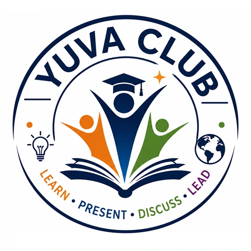

Leadership
Study leaders, service, character, courage, and positive influence.
Explore leadership stories
YUVA ClubLeadership learning hub
Explore YUVA’s existing topic library, stories, trustworthy research references, and guidance for families and organizations.
Find a starting point
Every category points to content that already exists in the YUVA public library or to an honest support route.
Study leaders, service, character, courage, and positive influence.
Explore leadership storiesBuild listening, storytelling, persuasion, debate, and interview skills.
Explore communicationUnderstand preparation, delivery, body language, and confident expression.
Explore public speakingUse evidence, questions, comparison, and reflection to examine ideas responsibly.
Explore topic pathwaysFind credible starting points for science, history, service, culture, and innovation.
View research referencesChoose a topic, organize a message, practice, present, and reflect.
See the YUVA JourneyUnderstand the student journey, authorized progress access, safety, and support.
Review family safety guidanceLearn how a school, library, nonprofit, or youth organization can begin.
Explore partnership guidanceFeatured existing content
Research and reading
These existing recommendations help families and organizers explore deeper background. YUVA’s weekly pages remain original, age-appropriate summaries for discussion.
Mahabharata & Ramayana: Amar Chitra Katha, Project Gutenberg, ValmikiRamayan.net, Wisdom Library, and Sacred Texts.
Vivekananda & Kalam: Belur Math, Vedanta Society, AbdulKalam.com, DRDO, ISRO, and Britannica.
Panchatantra: StoryWeaver, Panchatantra collections, and public-domain retellings.
Traditions & festivals: Hindu American Foundation, Hinduism Today, Chinmaya Mission, and Vedic Heritage Portal.
Environment & nature: NOAA, NASA Climate Kids, National Park Service, local park agencies, and conservation education resources.
Space & technology: NASA, ISRO, ESA, science museums, NIST AI resources, and robotics education sites.
Innovators & entrepreneurs: Official biographies, museum resources, foundation pages, Nobel Prize profiles, Britannica, and libraries.
Community & service: Official public-service sites, nonprofits, AmeriCorps, libraries, schools, and community organizations.
Life skills: CFPB Money as You Grow, Toastmasters youth resources, school counseling resources, and trusted education sites.
Student heroes: Students may choose a hero from family, community, history, science, service, arts, or daily life.
Monuments & architecture: UNESCO World Heritage Centre, museums, heritage agencies, and reputable architecture and history references.
Curiosity is where leadership begins